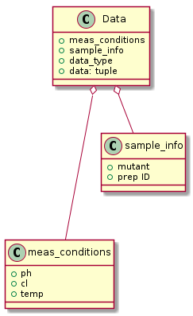

Older Description#
Plate Reader data Parser (and some analysis). To parse:
1) **Tecan** data files, containing single fluorescence values (scalar).
Data are exported (from Tecan) into .xls file, then converted to csv
(e.g. soffice --convert-to csv -outdir tmp *.xls).
Each **Labelblock** contains 96 single (float) values,
i.e. excitation emission filter-based fluorescence.
2) **EnSpire** data files, containing spectra of various types e.g.
excitation, emission, absorption and possibly at different temperatures.
[Well, Sample, MeasA:Result, MeasA:WavelengthExc, MeasA:WavelengthEms]
OOA#
The program need to be able to:
read csv file(s) and an experimental_note file
fill Data into a list (DB in future?)
group Data into Titration (in which a single measurement_condition is changed)
fit Titration with the proper Fitting_function and obtain: fitting_params, fitting_quality.
Note
Also a well may contain more than a single measure under the same measurement_conditions (ex400nm and ex485nm), which could be fitted globally. Temperature scan is when temperature in measurement_conditions is changed; here it might be necessary to correct pH_value accordingly (with temperature changes).
OOD#
Data contains:
a (tuple) of values or a (tuple) of spectra
metadata describing the data type
measurement_conditions like pH_value, Cl_conc, temperature
sample_information like mutant_name, prep_id.
